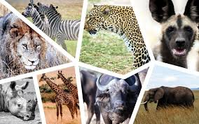
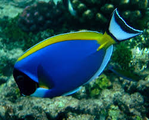
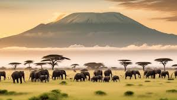
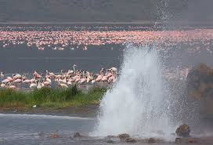

WILDLIFE
Kenya is one of the world's most biodiverse countries, with a wide variety of wildlife and habitats:Mammals: Kenya is home to many large mammals, including the Big 5 African mammals, as well as smaller animals like the dik-dik, a dwarf antelope. Other mammals include the African savannah elephant, Grevy's zebra, black and white rhinos, giraffes, hartebeest, waterbuck, impala, eland, warthog, and buffalo.

Birds: Kenya has 1,100 bird species, including migratory birds like the osprey and the white-bellied go-away bird.
Reptiles: Kenya has 191 reptile species.
Fish: Kenya has 180 freshwater fish and 692 saltwater fish.

Amphibians: Kenya has 88 amphibian species.
Invertebrates: Kenya has about 25,000 invertebrate species, which are animals without a backbone, such as insects and worms.
Plant species:Kenya has over 35,000 plant species.
Fungi and bacteria: Kenya has 2,000 fungi and bacteria species.
Kenya's wildlife can be found in many different habitats, including grasslands, forests, mountains, arid lands, croplands, and marine and inland waters. Some of the best places to see wildlife in Kenya include:
Maasai Mara:
Home to large grazing herds of zebra, giraffe, buffalo, gazelle, and topi, as well as predators like lions, cheetahs, spotted hyenas, jackals, and bat-eared foxes

Amboseli National Park:
Home to elephants and some endangered rhinos

Lewa Conservancy:
A project dedicated to the recovery of endangered rhinos
Samburu:
Home to leopards and two endemic species found only in northern Kenya: Grevy's zebra and the reticulated giraffe
Lake Bogoria:
Home to a vast number of lesser flamingos
